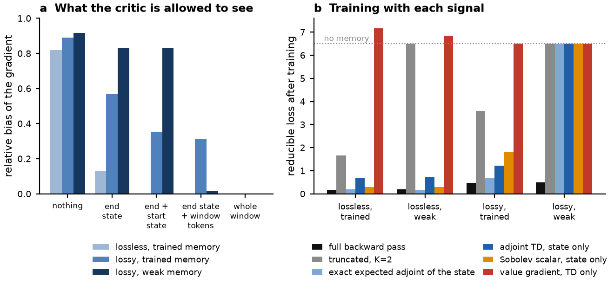
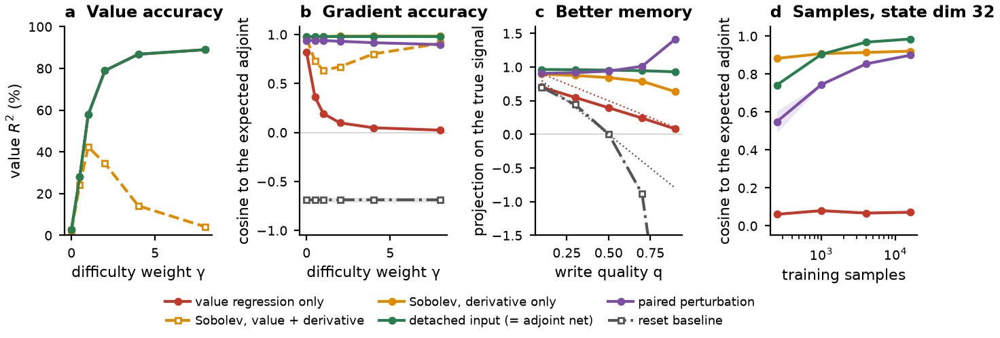

Can a scalar value net carry credit across a truncated backward pass?
An overnight program on value nets for language-model pretraining: predicting future loss at nanoGPT scale, and using a value net trained by temporal differences as the boundary condition of truncated backpropagation through time.
Bottom line结论
No GPU result yet: the first worker pod came up at 22:30 PST, an hour late, and its first table is due around 00:25. What exists is theory with three independent audits, and small CPU experiments.
The theory gives two results that shape the plan. The second one came out of an adversarial audit and changes the design of every method, including the adjoint net of the original note.
First. Truncated backpropagation needs, at the cut, the derivative of the future loss with respect to the carried state with the future tokens held fixed. A scalar value net trained by temporal differences learns the expected future loss of the documents whose state looks like $s$. Its gradient is the needed derivative plus a second term, which measures how the mix of documents changes as the state moves. In language-model pretraining most of the variance of future loss is document difficulty, so the second term can dominate.
In a toy with a known answer this is what happens: value regression reaches $R^2=78\%$ with a gradient cosine of 0.08, and a critic with a derivative target and a detached second input reaches the same $R^2$ with a cosine of 0.98. The confounding is also not limited to difficulty: a memory is useful because it predicts the future, and the value-regression gradient along the memory directions shrinks in proportion to how good the memory is.
Second. For a model that is calibrated given its inputs, the expected gradient of the future loss with respect to the carried state, given that state, is zero (the score identity). The credit for storing something new lies in the correlation between how the window writes the state and what the future asks for, and a function of the state alone cannot represent it. A critic therefore has to see what the window contained, as a detached input. In a closed-form recall toy this takes the bias of the bootstrapped gradient from 83% to 1%.
The program therefore tests each learned boundary signal in two conditionings, state only and state plus window, and the scalar value in three forms: trained on the loss-to-go alone, with an added derivative target (Sobolev training), and with a detached second input. The adjoint net of the original note is the reference.
Findings发现
1A boundary signal that sees only the carried state carries no credit for storing new information once the reader is calibrated
Terms. The boundary signal $g$ replaces the gradient that truncated backpropagation drops at the cut. $B=\mathrm{d}s_{\text{end}}/\mathrm{d}\theta$ is how the parameters move the state at the cut through the window, and $\lambda$ is the exact gradient of the future loss with respect to that state. The true missing term is $\mathbb{E}[B^\top\lambda]$. A model is calibrated given its inputs when its predicted next-token distribution equals the true distribution given the carried state and the tokens of the current segment, which is what training on cross-entropy drives the reader toward.
For cross-entropy and any information set $\mathcal{G}$ that contains the state, $$\mathbb{E}[\nabla_{s}\ell\mid\mathcal{G}]=\nabla_s\,\mathbb{E}\big[\mathrm{KL}\big(P(\cdot\mid\mathcal{G})\,\|\,p_\theta(\cdot\mid s)\big)\mid\mathcal{G}\big].$$ With $\mathcal{G}$ the state alone and a calibrated reader the divergence is at its minimum, so the expected read gradient given the state is zero. Three regimes follow. If the state is a sufficient summary of its history, truncation is already unbiased and there is nothing to restore. If the state is lossy and later states keep what it holds, the ideal state-only signal is exactly zero and the missing term is all covariance, $\mathbb{E}[B^\top\lambda]=\mathbb{E}[\mathrm{Cov}(B,\lambda\mid s)]$: the write Jacobian and the future's demand are linked through window content that the state does not hold, and a function of the state cannot see that link. If later states also lose information, a state-only signal restores the credit for retaining what is already stored, and nothing for storing more. In an enumerated example the expected gradient given the state is $2\times10^{-13}$ while the true write gradient has norm 0.13, and a critic that sees the window reproduces it to $10^{-10}$. This matches an earlier probe result on this question: the energy of the future gradient was predictable from the hidden state ($R^2\approx0.46$) and its signed direction was not ($R^2\approx0.015$). In a closed-form linear-quadratic recall toy (figure), a critic that sees the end state leaves 57 to 83% of the bias when the state is lossy; adding the window's tokens as an input brings it to 1% in the hardest case; and when training starts from a weak, lossy memory every state-only signal, including the exact expected adjoint, ends at the no-memory loss of 6.50 while the full backward pass reaches 0.50.

Oracle critics in a toy: the figure says which conditioning makes the target well defined. Whether a network learns it, and how far a real language model is from calibration, are the experiments now assigned (state-only against window-conditioned critics on every testbed).
2In a toy with a known answer, value regression fits the value and misses the gradient; derivative or paired-difference targets recover it
The toy state has a memory part, a noisy copy of content that the future asks for (write quality $q$ is the correlation between memory and content), and an inert part that encodes the document's difficulty with weight $\gamma$ in the cost. The expected adjoint is known by Monte Carlo. Six critics are fit by ridge regression on random Fourier features: value regression only; Sobolev with value and derivative terms; Sobolev with the derivative term only; a detached second input, which here is the same as an adjoint net plus a value head; paired perturbation, which regresses value differences between a state and a noisy copy under the same future; and a reset baseline, which regresses the loss difference to a rollout from the empty state.
At $\gamma=2$ value regression reaches $R^2=78\%$ with a cosine of 0.08 to the expected adjoint (b, red). The detached-input critic keeps the same $R^2$ at a cosine of 0.98 (green). A single-input Sobolev critic with both terms loses on both counts, $R^2=34\%$ and cosine 0.67 (dashed orange), because the value term and the derivative term ask for different gradients. Panel c varies the memory quality with no difficulty term: the value-regression gradient keeps a share close to $1-q$ of the signal (dotted line), so it fades as the memory improves; the reset baseline follows $1-2q$ and opposes the signal for $q>0.5$, which refutes a construction the lead had proposed. Panel d: at state dimension 32, paired perturbation needs about 16 times the samples of the derivative-supervised critics for the same cosine.

A toy with a linear-in-features critic. It checks the fixed points of the objectives, and says nothing yet about temporal-difference training, a moving model, or text.
3The gradient of a correctly fitted scalar value differs from the boundary signal by a confounding term
Terms. The carried state $s_j$ is what the model passes from block $j-1$ to block $j$ (memory tokens, a cache, fast weights). The pathwise adjoint $\lambda_j=\nabla_s G_j(s_j,f)$ is the derivative of the remaining loss $G_j$ with respect to that state for the document's actual future tokens $f$; it is what full backpropagation would deliver at the cut. The expected adjoint $a(s)=\mathbb{E}[\lambda\mid s]$ is the best any learned boundary signal can do. The value $V(s)=\mathbb{E}[G\mid s]$ is what temporal-difference or Monte Carlo regression converges to.
For a state with a smooth density, $$\nabla_s V(s)=a(s)+\mathrm{Cov}\big(G,\ \nabla_s\log p(f\mid s)\ \big|\ s\big).$$ The covariance term is zero when the future does not depend on the state, as in control problems where the state causes the future. Under teacher forcing the future tokens come from the document, and the state summarizes the same document, so the term measures how document difficulty varies across states. Earlier runs on this question found 80 to 90% of the variance of future loss between documents. The figure is a closed-form example: a two-coordinate state whose first coordinate is memory that lowers the loss, with a difficulty signal of strength $\|w\|$ that is either carried by the second, causally inert coordinate (a) or mixed into both (b). With value regression alone the fit is exact and the cosine to the expected adjoint falls with the confounding strength, and in case b it turns negative: following that gradient increases the true loss. A derivative target of weight $\beta$ reduces the surviving confounding by $1/(1+\beta)$ at a cost in value fit (c). A second, detached input removes the trade-off.

This is a statement about the fixed point of value regression. Whether the term is large in a trained language model with a carried state is an experiment (workers 3, 5 and 6).
4With non-overlapping windows, truncation keeps the credit at lag $\tau$ with weight $(1-\tau/K)_+$, and at $K=1$ the write path receives no gradient
Terms. A window is $K$ consecutive segments processed with one backward pass; the state entering it is detached. The lag is the number of segments between the point where something is written into the state and the loss that uses it. Non-overlapping windows partition the document, which is how truncated training is normally run; sliding windows would back-propagate every loss through its own $K$ preceding segments.
A write and a use at lag $\tau$ are credited only when no window boundary falls between them. Over the positions of a document that happens with frequency $(1-\tau/K)_+$ (a). The share of the credit that is lost therefore falls like $1/K$ when the state forgets at rate $\rho$, $\frac{1-\rho^K}{K(1-\rho)}$ relative to the full gradient (b), and falls geometrically, $\rho^K$, only for sliding windows (c). At $K=1$ every pair is cut: the parameters that decide what to write receive exactly zero gradient in any task, and a boundary signal is then the only source of write credit. The first version of the theory claimed geometric decay; the proof audit refuted it. The first GPU implementation (a GPT with 16 recurrent memory tokens, worker 1) confirms the two exact statements in float64: the gradient of the write-slot parameters under $K=1$ is exactly zero, and windows of one segment with the exact boundary adjoint reproduce the full gradient to $10^{-16}$.

This is a statement about the gradient. A model trained with truncation also adapts to it, so the cost in loss has to be measured against a model trained with the full backward pass; that is the first GPU experiment.
Not established尚未确立
Predictions written before the runs, with the result that would refute each. A row moves to the findings when its experiment has seeds, a control and an audit of the code path.
| Prediction | Refuted if | |
|---|---|---|
| Q0 | With recurrent memory tokens on natural text, truncation to one segment loses most of the benefit of memory, and four segments recover it to within 0.01 nats. With a Transformer-XL cache, truncation costs under 0.01 nats. | Two-segment truncation is already within seed spread of the full backward pass in both models: nothing to restore on plain text. |
| Q1 | On delayed recall with a single delay of at least the window length, truncated training stays at chance and the full backward pass solves it. | Truncated training solves it. |
| Q2 | The value gradient from temporal differences alone has high value accuracy ($R^2>0.8$) and a parameter-gradient cosine at the level of a shuffled control; it gives no gain over truncation. | It closes more than 30% of the gap. |
| Q3 | Sobolev-trained scalar values and the adjoint net reach a batch-level cosine above 0.5 on synthetic tasks and close more than half of the gap. | An adjoint net supervised on exact adjoints stays below 0.3: the signal is not predictable from the state. |
| Q4 | Methods rank by gradient cosine, and value accuracy does not predict the ranking. | The ranking follows value accuracy. |
| Q5 | Removing the difficulty dependence of the loss repairs the plain value gradient on visited states. | It stays equally wrong. |
| Q6 | A value net with a detached second input matches the adjoint net where the expected adjoint is not a gradient field; the plain Sobolev value falls short there. | No separation. |
| Q7 | Adjoint temporal-difference learning is stable when the block Jacobian contracts (or a discount compensates). With non-overlapping windows of $K$ blocks, credit at lag $\tau$ keeps the weight $(1-\tau/K)_+$, so the relative error of the truncated gradient falls like $1/K$, and at $K=1$ the write path gets no gradient at all. (The first version of the theory predicted geometric decay; the proof audit refuted it.) | Divergence under contraction; a truncated-gradient error that falls faster than $1/K$. |
| Q8 | On natural text the per-boundary cosine of the best learner is below 0.2 while the batch-level cosine is several times larger. | The batch-level cosine of a supervised adjoint net is at the shuffled level. |
| Q10 | On a trained model, an adjoint net that sees only the state and is supervised on exact adjoints has a batch-level cosine near the shuffled control; the same net with the window as a detached input is clearly above it. | The state-only net is as good as the window-conditioned one and well above the control. |
| Q11 | In training, state-only signals stall between truncation and the full backward pass, and window-conditioned signals close more of the gap. From a cold start on a single recall delay longer than the window, temporal-difference targets fail and Monte Carlo targets work. | State-only matches window-conditioned; or temporal-difference targets solve the cold-start fixed delay. |
| Q9 | For value pretraining, temporal differences match a correctly normalized Monte Carlo head at 512 tokens and are the only option beyond the window; within-document $R^2$ stays under 0.1. The bias of 0.11 to 0.15 nats that an earlier run found for its temporal-difference head is un-converged bootstrapping: the bootstrapped part climbs toward the mean loss with a time constant of $\tau_{\text{EMA}}/(1-\gamma^n)\approx 850$ steps in that run of 2,290 steps. A scalar simulation of that run gives $-0.26$ nats, and about zero with a faster target average or a longer $n$. | Temporal differences are worse by more than 0.03 at every horizon with a fair comparator; the bias does not decay with training steps at the predicted rate. |
Algorithms and theory算法与理论
Setting, as in the note on value-gradient bootstrapping: blocks $x_0,\dots,x_{N-1}$, a carried state $s_{j+1}=U_\theta(s_j,x_j)$, block losses $\ell_j$, training windows of $K$ blocks whose entering state is detached. A boundary signal $g$ enters the window through the term $\langle \mathrm{sg}(g), s_{\text{end}}\rangle$.
Error formula. Summed over the windows of a document, the bootstrapped gradient differs from the full gradient by $$\hat\nabla(g)-\nabla_\theta L=\sum_m B_m^\top\,(g_m-\lambda_m),\qquad B_m=\frac{\mathrm{d}s_{\text{end}}}{\mathrm{d}\theta}\ \text{within window } m.$$ Truncation is $g=0$. Only the part of the error that $\theta$ can reach through the window matters, and a signal with positive cosine in that metric improves on truncation when its scale is below twice the optimal one. With $g=\mathbb{E}[\lambda\mid\text{history}]$ the bootstrapped gradient is unbiased and has lower variance than the full backward pass.
Candidates.
| name | boundary signal | trained on | fixed point |
|---|---|---|---|
trunc | $0$ | ||
adj-td | adjoint net $A_\omega(s)$ | differentiated Bellman equation | $a(s)$ |
vg | $\nabla_s C_\psi(s)$ | loss-to-go by temporal differences | $\nabla V=a+{}$confounding term |
sob-td | $\nabla_s C_\psi(s)$ | value target and derivative target $\hat A_j$ | between $\nabla V$ and the conservative part of $a$ |
sobc-td | $\nabla_s C_\psi(s,\mathrm{sg}(s))$ | same, with a detached second input | value $V$ and gradient $a$ together |
pert | $\nabla_s C_\psi(s)$ | value differences between a state and a perturbed copy on the same tokens, forward passes only | gradient of the smoothed expected cost |
sob-td:f, adj-td:f | $\nabla_s C_\psi(s,\text{window},f_{1:H})$ or $A_\omega(s,\text{window},f_{1:H})$ | as above, with the tokens of the next $H$ segments as an extra input | $\mathbb{E}[\lambda\mid\text{history},f_{1:H}]$; the exact adjoint as $H\to\infty$ |
Conditioning. Each learned signal comes in three forms: :s sees the carried state only (the
original note), :w also sees the window's hidden states as a detached input (required by the score
identity, finding 1), and :f also sees the tokens of the next $H$ segments.
Hindsight critics (derived at 22:41, audited at 22:54). The confounding term, the vanishing expected
gradient and the loss of credit at each bootstrap step all come from averaging over a future that the critic
does not know. Under teacher forcing the future tokens of a training document are known when a window is
processed, and nothing the model does changes them. A critic can therefore take them as input. As a function
of the state and the whole future the cost-to-go satisfies the Bellman equation exactly,
$$G_j(s_j,f_j)=\sum_{j\le r How far temporal-difference targets carry storage credit. For a critic that sees a detached cache of
the last $M$ windows and the next $H$ segments, trained by temporal differences with $K$-segment targets, a
use of stored content is credited exactly up to a lag of $MK+H$ segments, and at every lag with Monte Carlo
targets. A state-only critic gets none under a calibrated reader. Each cached window adds $K$ and each
lookahead segment adds one, and neither needs a backward pass through the model. Eight agents, each with a pod of four GPUs. Pods arrived late and one at a time, so each worker claims the most important open task when it starts. Each line is the first line of the worker's own status file; open a row for the full file. Common setting. Natural text: FineWeb documents with GPT-2 tokens, 64-token segments, 16 segments
per stream, a 6-layer and a 12-layer model, with either 16 recurrent memory tokens or a cache of the previous
segment as the carried state. Synthetic: delayed recall in which information written in one segment is
queried a fixed number of segments later, with a per-document difficulty that the state can predict.
All methods process the same tokens and take the same number of optimizer steps; they differ in the gradient
estimate. The exact boundary adjoint from a chunked backward sweep is the reference, and its accumulated
gradient must equal the full backward pass to $10^{-5}$. Metrics. Held-out loss by segment index; the cosine between the parameter gradients produced by a
learned boundary signal and by the exact one, summed over batches of 1, 16 and 256 documents, with a
shuffled-document control and a split-half ceiling; value $R^2$ against Monte Carlo loss-to-go, total and
within document. Evidence rules. Predictions and their falsifiers are written before the runs. A positive result needs
the shuffled control, at least two seeds and a fixed evaluation set. A negative result needs the exact-adjoint
arm working in the same code.Workers, live各 worker 实时状态
w1segment-recurrent LM on FineWeb: shared code, cost of truncation, K=1 testupdated 7 min before this build
shared/code/segrec/v1/ is published and usable** (README inside). memtok / txl / nomem / fullctx;# w1 status (22:47 PST)
**ANNOUNCE: `shared/code/segrec/v1/` is published and usable** (README inside). memtok / txl / nomem / fullctx;
trunc(K) with boundary-signal hook + adjoint-target callback, full, oracle (chunked exact sweep, returns λ at
every window start). Unit test (float64): oracle = full to 1e-16, trunc(1)+exact λ = full, λ = autograd dL/ds
to 1e-15, memtok trunc(1) write-slot grad exactly 0. Data prep 1 min (40 shards, 937k docs ≥ 1025 tokens).
Speed small B=128: ~0.14 s/step (trunc/full), 0.20 (oracle).
State: step 2 running (20 runs: memtok/txl × trunc K=1,2,4 + full, nomem, fullctx; 2 seeds; 6000 steps × 128 docs).
Last result: none yet (ETA ~00:25).
Next: step 2 table; then step 3 (frozen-model λ diagnostic) unless w5 takes it.
w2waiting for a GPU nodeno status file yet
w3waiting for a GPU nodeno status file yet
w4waiting for a GPU nodeno status file yet
w5waiting for a GPU nodeno status file yet
w6waiting for a GPU nodeno status file yet
w7waiting for a GPU nodeno status file yet
w8waiting for a GPU nodeno status file yet
Methods and reproducibility方法与可复现性